Peluang Usaha Kuliner Oliv Geprek Ekspres
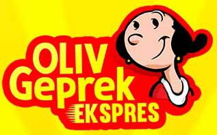
OLIV GEPREK EKSPRES
Waralaba makanan ayam geprek terbaik 2018
Franchise ayam geprek nomor satu di Indonesia
“Ayam geprek adalah salah satu dari sekian banyak jenis kuliner yang digemari oleh semua kalangan masyarakat di Indonesia, kami menghadirkan peluang usaha untuk Anda, dengan keuntungan yang dapat mencapai puluhan juta rupiah tiap bulannya.”
Gabung dan jadilah salah satu mitra sukses kami!
PROMO PAKET FRANCHISE
KHUSUS BULAN INI, KESEMPATAN TERBATAS!
Paket booth lengkap siap jualan! masih ada juga pilihan paket lainnya!
CUKUP DENGAN 15 JUTA SAJA
KAMI UCAPKAN SELAMAT!
#MITRA SUKSES KAMI
“Selamat kepada Bapak Roby!”
Roby Pratama
Matapura, Kalimantan Selatan
Salah satu mitra sukses kami asal Kalimantan Selatan, kini telah sukses mencapai sesuatu yang sangat luar biasa setelah kurang lebih satu tahun berjuang dalam mengelola bisnisnya Ayam Geprek Oliv Ekspres. Beliau berhasil membeli 1 unit mobil dengan hasih jualnnya, tentu itu tak luput dari usaha dan kerja keras beliau.
MAU SUKSES SEPERTI BELIAU?
Gabung Segera
Lebih dari 300 mitra telah bergabung dan sukses dengan kami
BERBAGAI KEUNGGULAN
1.Franchise Paling Lengkap
Anda akan mendapatkan segala perlengkapan secara lengkap dan siap untuk berjualan! jadi tidak perlu pusing dan khawatir dalam mempersiapkan segala sesuatunya kami telah mempersiapkan untuk Anda semuanya.
Gratis Bahan Baku 100 Porsi
2. No Royalty Fee
Semua keuntungan hasil penjualan akan menjadi milik Anda sepenuhnya 100%, kami tidak menerapkan sistem bagi hasil.
3. Produk Berkualitas
Kami hadir untuk Anda dengan konsep baru, dengan rasa baru serta inovasi baru yang secara rutin dan berkala selalu dikembangkan. Bahan baku paling berkualitas serta design packaging yang eyecatching dan kualitas bahan baku packaging dengan mutu tinggi.
4.Promo Ongkir
Free ongkir khusus pengiriman franchise wilayah pulau Jawa & diskon ongkir untuk pengiriman franchise wilayah luar pulau Jawa.
BEST SELLER
MASIH BANYAK KEUNGGULAN LAINNYA
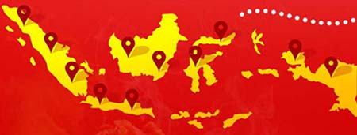
GALERI FOTO MITRA & KONSUMEN
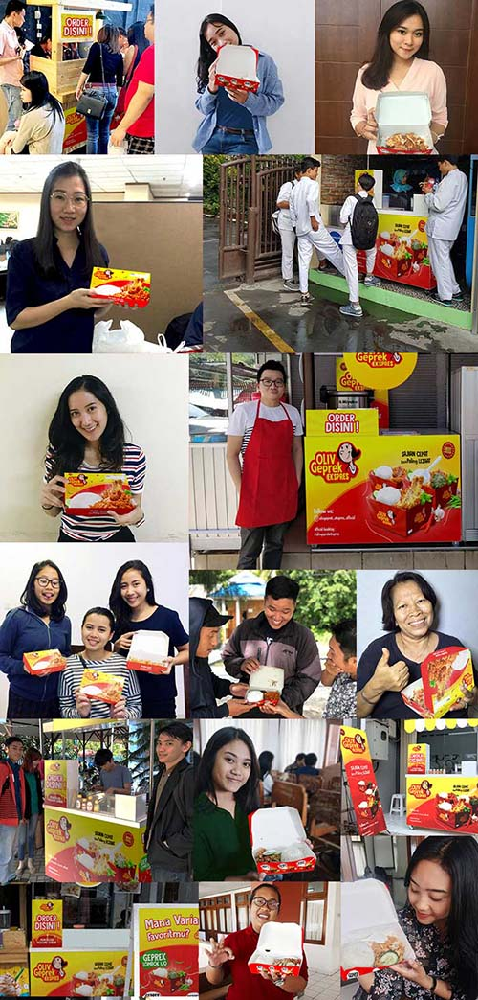
BERBAGAI KESERUAN BERSAMA OLIV GEPREK EKSPRES!
Share moment seru kamu bareng Oliv Geprek Ekspres
Tag Us : #olivgeprekekspres
MENGAPA HARUS PILIH KAMI?
1. HARGA FRANCHISE TERJANGKAU
Hanya dengan modal minim Anda sudah bisa langsung memiliki usaha Oliv Geprek Ekspres tanpa proses yang ribet dan memakan waktu yang lama.
2. PROSES YANG SANGAT MUDAH
Kami selalu memberikan kemudahan dan layanan dalam pengelolaan usaha Oliv Geprek Ekspres.
3. FOLLOW UP
Team selalu siap membantu serta melayani Anda dalam menjalankan usaha Oliv Geprek Ekspres.
4. LAYANAN DESAIN GRATIS!
Kami selalu siap membantu membuat gerai Anda lebih menarik dengan desain yang fresh dan up to date secara gratis.
5. BAHAN BAKU HARGA TERJANGKAU
Bahan baku dari kami adalah yang paling murah dan berkualitas memiliki racikan ala chef profesional.
6. PENGIRIMAN
Kami menyediakan agen pengiriman demi kelancaran distribusi bahan baku maupun paket franchise.
7. TEAM SUPPORT
Kami selalu siap dalam 24 jam dalam melayani dan membantu Anda.
PENJUALAN TERBAIK
Andi Saputra
Teluk Betung, Bandar Lampung
Salah satu mitra sukses kami asal Telukbetung, Bandar Lampung. Sudah hampir setahun beliau berjualan dan beliau setiap harinya mampu menjual paling banyak 120 porsi ayam geprek. Karena semangat dan kerja kerasnya kini beliau berencana untuk menambah 1 outlet lagi agar omzet tiap bulannya semakin fantastis!
Nurul Fatimah
Maros, Sulawesi Selatan
Dengan segala niat dan kerja keras kini beliau dapat memenuhi kebutuhan rumah tangganya. Setiap hari beliau bekerja keras untuk bejualan dan strategi promosi beliau pikirkan dengan keras. Beliau mampu menjual 100 porsi dalam seiap harinya, outletnya selalu ramai pembeli dan kini omzet beliau tiap bulannya mencapai 30jtan.
Dwi Nur Rangga
Dampar, Kalimantan Timur
Bapak Rangga mampu menjual 140 porsi ayam geprek ditiap harinya, sangat luar biasa kini keuntungan dari omzet penjualannya ia tabung untuk biaya pernikahannya di tahun depan. Selamat yaa!
TESTIMONI MITRA KAMI
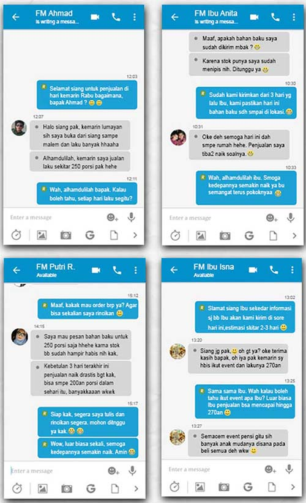
BUKTI RESI PENGIRIMAN DARI EKSPEDISI TERPERCAYA
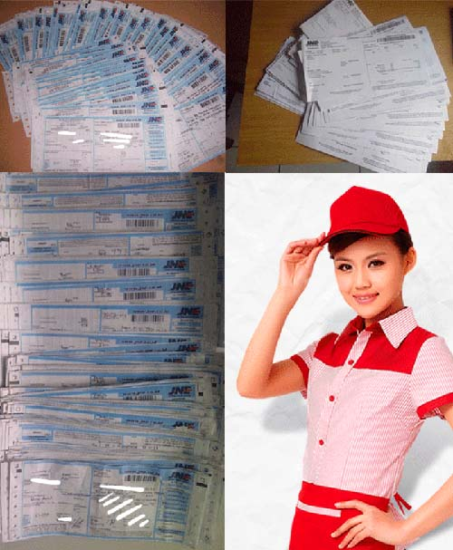
PROMO PAKET FRANCHISE
PAKET 1
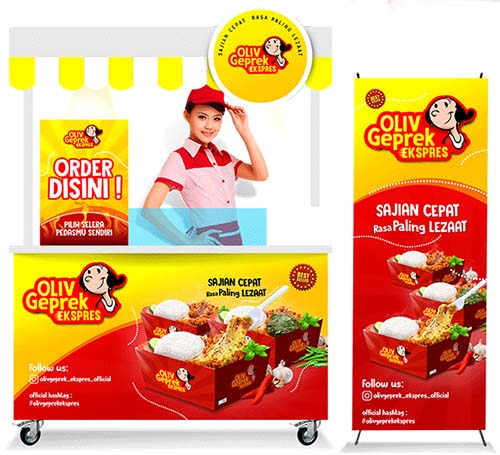
Paket franchise dengan booth lengkap siap jualan
Dari Harga 25jt Harga Promo jadi 15jt saja!
Gratis Bahan Baku 200
PAKET 2
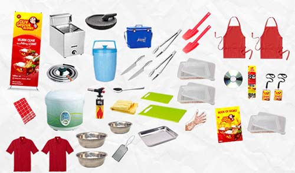
Paket franchise tanpa booth
Dari Harga 12jt Harga Promo jadi 8jt saja!
Gratis Bahan Baku 200
“Semua Paket Mendapatkan”
Perlengkapan jualan secara lengkap!
PASTI LENGKAP SIAP JUALAN
Paket 1 akan mendapatkan
- 1 set booth lengkap
- 1 x-banner
- 1 unit deep fryer gas
- 1 unit selang & regulator
- 1 set cobek
- 1 unit rice cooker
- 1 pcs termos nasi
- 1 unit ice box
- 1 unit gas torch
- 2 pcs pisau
- 1 pcs sendok
- 2 pcs capitan
- 1 pcs serbet
- 2 pcs celemek
- 1 pcs kanebo
- 1 pcs talenan
- 2 pcs baskom tepung ayam
- 1 pcs baskom sambal
- 2 pcs toples serbaguna
- 1 pcs nampan stainless
- 2 pcs solet plastik
- 1 pcs parutan keju
- 1 pcs talenan besar
- 1 pcs toples ayam
- 2 pcs toples sayur/ lalapan
- 1 pack handgloves
- 2 pcs seragam pegawai
- 1 video SOP
- 1 Manual SOP
- 1 book of secret
- 2 ID Card pegawai
- FREE bahan baku 200 porsi
Paket 2 akan mendapatkan
- 1 set sticker lengkap
- 1 x-banner
- 1 unit deep fryer gas
- 1 unit selang & regulator
- 1 set cobek
- 1 unit rice cooker
- 1 pcs termos nasi
- 1 unit ice box
- 1 unit gas torch
- 2 pcs pisau
- 1 pcs sendok
- 2 pcs capitan
- 1 pcs serbet
- 2 pcs celemek
- 1 pcs kanebo
- 1 pcs talenan
- 2 pcs baskom tepung ayam
- 1 pcs baskom sambal
- 2 pcs toples serbaguna
- 1 pcs nampan stainless
- 2 pcs solet plastik
- 1 pcs parutan keju
- 1 pcs talenan besar
- 1 pcs toples ayam
- 2 pcs toples sayur/ lalapan
- 1 pack handgloves
- 2 pcs seragam pegawai
- 1 video SOP
- 1 Manual SOP
- 1 book of secret
- 2 ID Card pegawai
- FREE bahan baku 200 porsi
MATERIAL BOOTH BERKUALITAS
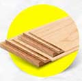
- BAHAN KAYU BERKUALITAS
Terbuat dari bahan kayu berkualitas sehingga membuat booth berdiri kuat, kokoh dan awet.
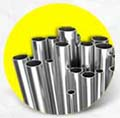
- BESI TIANG KUAT
Dengan bahan besi pada tiang penyangga, booth semakin kuat dan tidak goyah.
- DESAIN MENARIK
Desain booth yang menarik dan eyecatching, mempunyai daya tarik tersendiri dan bisa menunjang penjualan Anda
MANAGEMENT SUPPORT
Team management yang bersifat :
Profesional
Fast Respon
Solid
Melayani Mitra Sepenuh Hati
KARENA ANDA PRIORITAS KAMI
“Kami siap memfollowup secara intents untuk mencapai penjualan maksimal”
- TEAM MARKETING
Team marketing yang senantiasa melayani dan membantu calon mitra saat ingin bergabung menjadi mitra
- TEAM CUSTOMER SERVICE
Selalu siap memberikan bimbingan tips & trik dalam meningkatkan penjualan
- TEAM DESIGNER
Senantiasa membantu mitra meningkatkan penjualan secara maksimal lewat koridor design
- TEAM PRODUKSI
Team produksi yang selalu mengontrol ketersediaan bahan baku agar selalu ready stock setiap harinya
- TEAM EKSPEDISI
Siap mengirim segala jenis pemesanan paket yang dipesan oleh mitra, dan tiba di tempat secara tepat waktu
GRATIS BUKU PANDUAN SUKSES
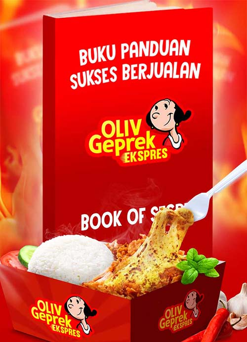
Dapatkan strattegi penjualan yang menarik!
Selain resep adonan rahasia, kami memiliki resep rahasia sukses!
- Mendapatkan BEP kurang dari 1 bulan
- Menjual 120 pack dalam 2 jam
- Meningkatkan keuntungan 50% tiap bulannya
- Penempatan lokasi paling stategis
BANDINGKAN SAJA!
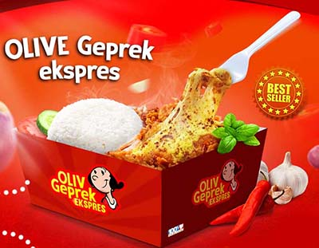
OLIV GEPREK EKSPRES
- Perusahaan jelas terorganisir
- Produk diproduksi sendiri
- Layanan free design
- Resep rekomendasi dari chef bintang lima
- Inovasi, konsultasi dan sharing untuk perkembangan mitra Oliv Geprek Ekspres
PRODUK LAIN
- Perusahaan belum jelas & tidak benefit
- Tidak ada kerjasama dengan instansi besar
- Masih mengambil tender dari pabrik yang masih dijual umum
- Tidak ada inovasi dan pengembangan untuk mitra
MENU VARIANT
“BEST SELLER”
BERANI COBA?
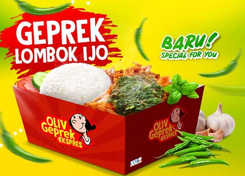
GEPREK LOMBOK IJ0 BARU! SPECIAL FOR YOU
Kmai hadirkan inovasi baru nutk pecinta pedas, ayam geprek dengan paduan pedasnya cabe hijau segar pilihan. Cobain sekarang!
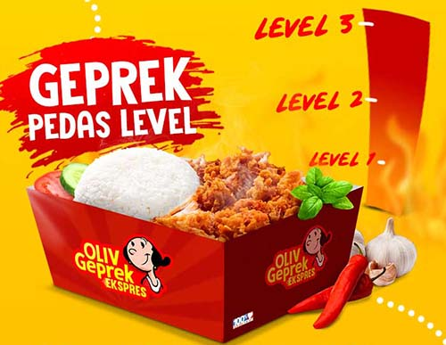
GEPREK PEDAS LEVEL
Rasakan sensasi ayam geprek dengan cabai segar pilihan, dengan varian level 1,2,3 kamu bisa pilih sendiri selera pedasmu!
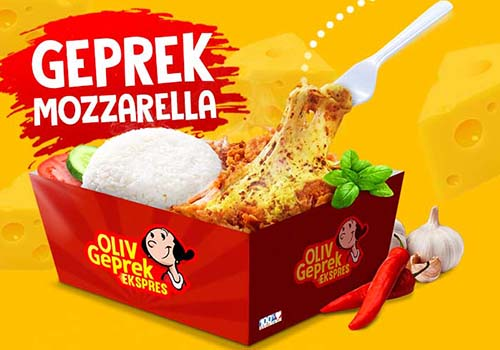
GEPREK MOZZARELLA
Lezatnya ayam geprek yang dipadu dengan lembutnya keju mozzarella bikin kamu good mood dan pastinya bikin nagih!
Mana Varian Favoritmu?
Tambahkan inovasi rasa ke dalam Oliv Geprek Ekspres untuk menunjuang penjualan! Tambahkan beberapa topping sebagai pelengkap Oliv Geprek Ekspres.
BAHAN BAKU TERJANGKAU
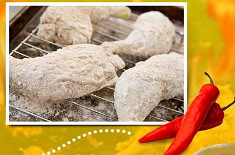
Kualitas unggulan. Harga Terjangkau!
Pertama
Adonan tepung crispy Oliv Geprek Ekspres dibuat dari bahan baku unggulan racikan ala chef bintang lima
Kedua
Selai dan topping yang digunakan juga dari bahan baku pilihan dan berkualitas
Ketiga
Rasa dan kualitas produk tiodak diragukan lagi
BAHAN BAKU HABIS
Jangan khawatir langsung order ke team cs kami
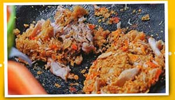
PERHITUNGAN BALIK MODAL
Harga bahan baku dari pusat
- Tepung 1 kg : Rp 24.000,- (untuk 15 porsi)
- Kemasan 1 pcs : Rp 1.700,-
HPP tiap porsi
- Tepung : Rp 1600,-
- Kemasan : Rp Rp1.700,-
- Paha Ayam : Rp 3.000,-
- Sambal : Rp 700,-
- Minyak Goreng & Gas : Rp 500,-
- Nasi Putih : Rp 2.000,-
Total HPP 1 porsi : Rp 9.500,-
HARGA JUAL : Rp 1.2000,- s/d Rp 20.000,- HARGA JUAL RATA-RATA : Rp 13.000,-/porsi
HPP : Rp 9.500,- Harga Jual : 1.3000,-/porsi Laba : Rp 3.500/porsi
Jika omzet 1 hari 50 porsi 50x3500 : Rp 175.000,-
1 Bulan (25 hari kerja) 25x175 : Rp 4.375.000,-
Biaya lain-lain (sayur,dll) : Rp 300.000 Income 1 bulan untuk penjualan rata-rata 50 porsi : Rp 4.375.000 - Rp 300.000 = Rp 4.075.000,-
SANGAT MENGUNTUNGKAN

NO ROYALTY FEE NO FRANCHISE FEE NO ADVERTISING FEE
FREQUENTLY ASK QUESTION
M = Bagaimana menjadi mitra OLIV GEPREK EKSPRES?
OGE = Bisa lihat di persyaratan untuk menjadi mitra OLIV GEPREK EKSPRES
M = Apa yang membedakan franchise OLIV GEPREK EKSPRES dengan yang lain?
OGE = franchise kami bisa dibuka di indoor maupun di outdoor. Dan OLIV GEPREK EKSPRES berbeda dari franchise yang lainnya bukti yang real, bukan hanya testimonial
M = Apakah dikenai biaya dalam pengiriman booth?
OGE = Biaya pengiriman ditanggung oleh mitra
M = Berapa ukuran booth OLIV GEPREK EKSPRES?
OGE = Kurang lebih 150cm x 60cm x 80cm
M = Jika mitra sudah merasa cocok apa yang harus dilakukan?
OGE = Langsung menghubungi bagian marketing untuk cara gabungnya
M = Setelah mengisi perjanjian kontrak apa yang harus dilakukan?
OGE = Calon mitra bisa melakukan pelunasan dengan mentransfer uang senilai paket franchise yang dipilih ke rekening yang sudah diinformasikan oleh bagian marketing
M = Bagaimana jika dalam satu kota sudah ada outlet OLIV GEPREK EKSPRES?
OGE = Dalam satu kota tidak masalah ada beberapa outlet, asalkan radius antara outlet minimal 1 km
M = Untuk karwayan apakah disediakan dari pusat?
OGE = Tidak,untuk karyawan disediakan oleh mitra
M = Bagaimana dengan training karyawan dan cara penyajian OLIV GEPREK EKSPRES?
OGE = Kami mengirim SOP berupa CD yang dikirim bersamaan dengan booth, yang bersifat mudah diterapkan
M = Apakah boleh jika berpindah lokasi dalam berjualan?
OGE = Mitra boleh berpindah lokasi asalkan meminta ijin ke kantor pusat dan memberikan alamat lokasi yang baru sebelum berpindah tempat
M = Apakah mitra diperbolehkan dalam mengubah harga jual per porsi?
OGE = Kami tidak mematok harga per porsi, kami hanya menyarankan untuk harga jual per porsi kisaran Rp 10.000 s/d Rp 20.000 disesuaikan dengan daya beli disekitar outlet
CARA BERGABUNG SANGAT MUDAH!
1. PILIH PAKET FRANCHISE
Pilih paket franchise yang Anda inginkan. Bisa dilakukan dengan cara telpon melalui marketing kami.
2. PEMBAYARAN
Pembayaran bisa melalui transfer sesuai harga paket franchise yang dipilih.
3. PENGIRIMAN
Paket akan dikirim setelah pelunasan & dikirimkan dihari yang sama.
4. OUTLET SIAP BUKA
Paket sudah lengkap, ketika sudah sampai di lokasi, mitra bisa langsung berjualan.
SYARAT & KETENTUAN
Management kami memberikan berbagai kemudahan dan pelayanan baik kepada calon mitra maupun mitra yang sudah berjalan.
PERSYARATAN
Memiliki modal yang cukup untuk investasi sesuai harga paket franchise
Memiliki komitmen terhadap bisnis ini untuk maju dan berkembang bersama
Bersedia meluangkan waktu untuk terjun langsung mengawasi perkembangan outlet
Memahami resiko bisnis waralaba
Bersedia menaati peraturan yang ada dalam surat kerja sama
Mitra wajib membeli bahan baku dari pusat
KEBUTUHAN
Lokasi berada di tempat strategis : didepan pusat keramaian /didepan sekolah - sekolah menengah keatas, kampus atau mini market
Luas ukuran tempat sewa minimal sesuai dengan ukuran counter ( 120X60cm)
Staff Karyawan
COBAIN PAKET SAMPLENYA!
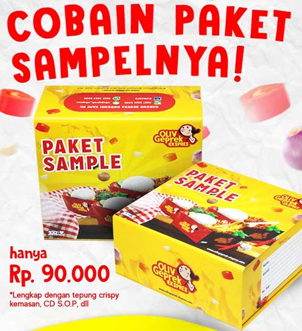
Rp 900.000,- * Belum trermasuk Ongkir
- Lengkap dengan tepung crispy kemasan, CD SOP, dll.
ANDA SIAP JADI MITRA SUKSES?
HUBUNGI KAMI SEGERA
Tagar: #bisnis ayam geprek #waralaba kuliner #waralaba oliv geprek ekspres #peluang bisnis ayam geprek #peluang usaha ayam geprek #bisnis kuliner #peluang usaha kuliner #peluang bisnis kuliner